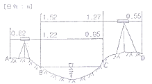
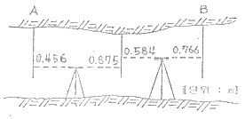
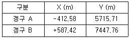

지적산업기사 (2007-08-05 기출문제)
1과목: 지적측량
1. 경위의측량방법에 의한 지적삼각점의 관측에서 수평각의 측각공차 중 기지각과의 차에 대한 기준은?
- ± 30초 이내
- ± 40초 이내
- ± 50초 이내
- ± 60초 이내
(정답률: 60%)

2. 지적도근점의 성과는 어디에서 관리하는가?
- 읍ㆍ면
- 소관청
- 시ㆍ도
- 행정자치부
(정답률: 62%)
3. 다각망도선법으로 실시한 지적삼각보조점의 계산에서 도선별 연결 오차는 얼마 이내로 하여야 하는가? (단, S는 도선의 거리를 1천으로 나눈 수이다.)
- (0.⑤×S) 미터 이하
- (0.10×S) 미터 이하
- (0.15×S) 미터 이하
- (0.30×S) 미터 이하
(정답률: 50%)
4. 축척 1/600에 등록될 면적이 70.55m2로 산출 되었다. 이를 토지대장에 등록할 결정 면적은?
- 70m2
- 70.5m2
- 70.6m2
- 71m2
(정답률: 알수없음)
5. 축척 1/1200을 1/600 으로 잘못 알고 측정한 면적이 300m2일 때 실제면적은?
- 75m2
- 150m2
- 600m2
- 1200m2
(정답률: 55%)
6. 행정구역의 도경계와 군경계가 중복이 될 경우 다음 어느 것이 타당한가?
- 군경계만 그린다.
- 도경계만 그린다.
- 2개 경계 모두를 같이 그린다.
- 소관청이 임의로 그릴 수 있다.
(정답률: 37%)
7. 축척 1/600 지역에서 측판측량을 도선법으로 5개의 변을 관측하여 도상 +1㎜의 폐합오차가 발생하였다. 제3점에 배분하여야 할 지상거리는?
- 36㎝
- 24㎝
- 12㎝
- 6㎝
(정답률: 40%)
8. 지적도면 제도에 대한 설명으로 틀린 것은?
- 지적측량기준점은 0.2㎜ 폭의 선으로 제도한다.
- 리ㆍ동의 행정구역선은 0.2㎜ 폭으로 제도한다
- 시ㆍ도계의 행정구역선은 0.4㎜ 폭으로 제도한다.
- 필지의 경계는 0.2㎜ 폭으로 제도한다.
(정답률: 40%)
9. 앨리데이드를 이용하여 두 점간의 경사거리와 경사분획을 측정한 결과 경사거리 80m, 경사분획 + 15.5인 경우 두 점간의 수평거리는 얼마인가?
- 79.1m
- 79.5m
- 78.5m
- 78.1m
(정답률: 65%)
10. 도면에 등록하는 지번과 지목은 전산정보처리 조직이나 레터링으로 작성하는 경우를 제외하고는 어떤 글자체로 제도하는 것을 기준으로 하는가?
- 지번은 명조체, 지목은 고딕체로 한다.
- 지번과 지목은 모두 고딕체로 한다.
- 지번과 지목은 모두 명조체로 한다.
- 지번은 고딕체, 지목은 명조체로 한다.
(정답률: 알수없음)
11. 다음의 지적삼각점 성과표에 기록, 관리하는 사항 중에서 반드시 등재하지 않아도 되는 것은?
- 경계점좌표
- 소재지와 측량연월일
- 지적삼각점의 명칭과 기준원점명
- 자오선수차
(정답률: 46%)
12. 다각망도선법으로 지적삼각보조측량을 하는 경우에 점간거리로 맞는 것은?
- 평균 0.5㎞ 이상 1㎞ 이하
- 평균 1㎞ 내지 3㎞
- 평균 2㎞ 이상 5㎞ 이하
- 평균 3㎞ 내지 6㎞
(정답률: 알수없음)
13. 다음 중 필지에 대한 면적측정대상이 아닌것은?
- 지적공부 복구
- 신규등록
- 축척변경
- 지목변경
(정답률: 알수없음)
14. 지적세부측량을 교회법으로 실시할 때의 기준으로 틀린 것은?
- 3방향 이상의 교회에 의할 것
- 방향각의 교각은 30° 이상 150° 이하로 할 것
- 전방교회법 또는 후방교회법에 의할 것
- 광파조준의를 사용하는 경우 방향선의 도상 길이는 최대 20㎝ 이하로 할 것
(정답률: 알수없음)
15. 축척 1200분의 1 지역에서 측판을 구심할 경우 제도 허용 오차를 0.2㎜ 정도로 할 때 지상의 구심오차 (편심 거리)는 몇 ㎝ 까지 허용할 수 있는가?
- 24㎝ 이내
- 18㎝ 이내
- 12㎝ 이내
- 6㎝ 이내
(정답률: 알수없음)
16. 지적측량에서 최소자승법으로 조정할 수 있는 오차는?
- 부정오차
- 착오
- 기계오차
- 정오차
(정답률: 60%)
17. 측판측량으로 이동지 정리를 위한 측량준비도에 기재하여야 할 사항이 아닌 것은?
- 측량대상 토지의 경계선 지번 및 지목
- 인근 토지의 경계선 지번 및 지목
- 행정구역선과 그 명칭
- 지적측량기준점 번호와 표고
(정답률: 50%)
18. 측량의 구분 중 지적측량방법에 속하지 않는 것은?
- 측판측량
- 경위의 측량
- 레이더측량
- 사진측량 및 위성측량
(정답률: 알수없음)
19. 지적측량자가 소관청에 지적측량대행계획서를 제출하여야 하는 시기는 언제까지를 기준으로 하는가?
- 지적측량신청을 받은 날
- 지적측량신청을 받은 다음날
- 지적측량을 실시하기 전날
- 지적측량을 실시한 다음날
(정답률: 알수없음)
20. 지적측량수행자가 지적측량을 실시한 후 소관청에 검사를 받지 않아도 되는 측량은?
- 신규등록측량
- 토지분할측량
- 경계복원측량
- 등록전환측량
(정답률: 47%)
2과목: 응용측량
21. 고저측량에서 중간시가 많을 경우에 가장 편리한 야장기입 방법은?
- 고차식
- 기고식
- 승강식
- 이란식
(정답률: 70%)
22. 그림과 같이 교호 수준측량을 시행한 경우 A점의 표고가 50m 라면 D점의 표고는?

- 50.06m
- 50.37m
- 50.58m
- 50.89m
(정답률: 알수없음)
23. 다음 중 폭이 100m 이고 양안(兩岸)의 고저차가 1m 되는 하천을 횡단하여 정밀히 수준측량을 실시할 때 양안의 고저차를 측정하는 방법으로 가장 적합한 것은?
- 교호수준측량으로 구한다.
- 시거측량으로 구한다.
- 간접수준측량으로 구한다.
- 양안의 수면으로부터의 높이로서 구한다.
(정답률: 59%)
24. 그림과 같이 갱내 수준측량을 하였을 경우 A점의 표고가 156.632m 라면 B점의 표고 HB는?

- 156.869m
- 157.233m
- 157.781m
- 158.401m
(정답률: 50%)
25. 초점거리 200㎜인 카메라로 평지로부터 고도 3000m에서 촬영한 연직사진에 찍힌 평균 표고 600m 인 지형의 사진 축척은 얼마인가?
- 1/12000
- 1/15000
- 1/24000
- 1/30000
(정답률: 42%)
26. 축척 1/10000 지형도 상에서 계곡으로 표현된 지역에서 등고선 간의 최소거리는 그 지표면의 무엇을 표시하는 것인가?
- 최소 경사방향
- 최대 경사방향
- 상향 경사방향
- 하향 경사방향
(정답률: 86%)
27. 다음 표는 다각측량에 의하여 결정된 갱구 A,B의 좌표값이다. 터널의 중심선 AB의 방향각은?

- 30°
- 45°
- 60°
- 90°
(정답률: 60%)
28. 등고선의 성질을 설명한 것으로 옳지 않은 것은?
- 등고선의 간격은 경사가 급할수록 좁아진다.
- 등고선이 지도의 도면 내에서 폐합되는 경우는 산꼭대기 또는 분지를 나타낸다.
- 등고선은 능선(분수선)과는 직교하지 않으나 최대 경사선과는 직교한다.
- 등고선은 동일 경사의 지면이 평면일 때에는 등간격의 평행선을 이룬다.
(정답률: 알수없음)
29. 항공사진을 판독할 때 사면의 경사는 실제보다 어떻게 보이는가?
- 실제와 차이가 없다.
- 실제보다 경사가 완만하게 보인다.
- 실제보다 경사가 급하게 보인다.
- 사면의 경사는 반대로 보인다.
(정답률: 알수없음)
30. 노선측량을 실시하려고 할 때의 측량 순서를 바르게 나타낸 것은?
- 도상계획→답사→예측→실측→공사측량
- 공사측량→도상계획→답사→예측→실측
- 실측→답사→예측→공사측량→도상계획
- 예측→답사→도상계획→실측→공사측량
(정답률: 75%)
31. 축척 1/50000 지형도에서 810m 와 910m 사이에 표시되는 주곡선 수는?
- 10개
- 9개
- 5개
- 2개
(정답률: 50%)
32. 단곡선에서 교각 I = 36°20′반경 R = 500m 노선의 기점에서 교점 (IP) 까지의 거리는 6500m 이다. 20m 간격으로 중심말뚝을 설치 할때 종단현의 길이 (ℓ2)는?
- 11m
- 12m
- 13m
- 15m
(정답률: 알수없음)
33. 원곡선에서 현의 길이가 45m 이고 중앙종거가 5m 이면 곡률반경은 약 얼마인가?
- 43m
- 45m
- 53m
- 55m
(정답률: 알수없음)
34. 사진측량의 특성과 거리가 먼 것은?
- 정성적 측량은 불가능하지만, 정량적 측량은 가능하다.
- 접근하기 어려운 대상물의 측량이 가능하다.
- 3차원뿐만 아니라 4차원 측량도 가능하다.
- 균일한 정확도의 측량이 가능하다.
(정답률: 알수없음)
35. 축척 1/25000 지형도에서 높이차가 120m 인 두 점 사이의 거리가 2㎝라면 경사각은?
- 13° 29′45″
- 13° 53′12″
- 76° 30′15″
- 76° 06′48″
(정답률: 31%)
36. 토적곡선(Mass Curve)을 작성하는 목적과 가장 거리가 먼 것은?
- 시공 방법 결정
- 토공기계의 선정
- 토량의 운반거리 산출
- 노선의 교통량 산정
(정답률: 50%)
37. GPS 의 특징에 해당되지 않는 것은?
- 야간에도 관측이 가능하다.
- 날씨의 영향을 거의 받지 않는다.
- 고압선 등의 전파에 대한 영향을 받지 않는다.
- 측점간 시통에 무관하다.
(정답률: 42%)
38. 등고선도로서 알 수 없는 것은?
- 산의 체적
- 댐의 유수량
- 지형의 경사
- 연직선 편차
(정답률: 63%)
39. 다음 중 완화곡선에 사용되지 않는 것은?
- 클로소이드
- 2차 포물선
- 렘니스케이트
- 3차 포물선
(정답률: 70%)
40. 두 개의 투영중심과 공간상의 임의의 점 P의 두 상점이 동일 평면상에 있기 위한 조건은?
- 공선조건
- 공면조건
- 변환조건
- 결합조건
(정답률: 67%)
3과목: 토지정보체계론
41. 디지타이징에 의한 필지별 독취에 대한 설명으로 틀린 것은?
- 이중선이 발생할 수 있음
- 작업시간이 비교적 많이 소요됨
- 인접경계선 중복 독취로 데이터량이 많음
- 위상구조가 자동으로 생성됨
(정답률: 알수없음)
42. 지적 전산정보처리조직 담당자의 사용자번호 및 비밀번호에 관한 사항 중 틀린 것은?
- 사용자의 비밀번호는 변경할 수 없다.
- 한번 부여된 사용자번호는 변경할 수 없다.
- 사용자번호는 사용자권한등록관리청별로 일련번호를 부여한다.
- 사용자권한등록관리청은 필요시 사용자번호를 별도 관리할 수 있다.
(정답률: 28%)
43. 지적전산자료의 이용에 관련한 사항 중에서 틀린 것은?
- 시ㆍ군ㆍ구 단위의 지적전산자료-소관청의 심사
- 시ㆍ도 단위의 지적전산자료-시ㆍ도지사의 심사
- 전국 단위의 지적전산자료-행정자치부장관의 심사
- 심사 및 승인을 거쳐 지적전산자료를 이용하는 자-사용료 면제
(정답률: 20%)
44. 토지정보시스템의 구성요소를 구분할 때 이에 해당 되지 않는 것은?
- 소프트웨어
- 하드웨어
- 수요 시장
- 조직과 인력
(정답률: 58%)
45. 지적데이터의 속성정보에 해당되지 않는 것은?
- 대지권등록부
- 토지대장
- 공유지연명부
- 지적도
(정답률: 알수없음)
46. 벡터데이터의 특징에 해당되지 않는 것은?
- 지도와 비슷하고 시각적 효과가 높으며 실세계의 묘사가 가능하다.
- 고해상력을 지원하므로 상세하게 표현되며 높은 공간적 정확성을 제공한다.
- 벡터데이터 모델은 상대적으로 자료구조가 단순하며 체인코드, 블록코드 등의 방법에 의한 자료의 압축 효율이 우수하다.
- 위상에 관한 정보가 제공되므로 관망 분석과 같은 다양한 공간분석이 가능하다.
(정답률: 알수없음)
47. 점, 선, 면으로 표현된 객체들 간의 공간관계를 설정하여 각 객체들 간의 인접성, 연결성, 포함성 등에 관한 정보를 파악하기 매우 쉬우며, 다양한 공간분석을 효율적으로 수행할 수 있는 자료구조는?
- 스파게티(spaghetti) 구조
- 래스터(raster) 구조
- 위상(topology) 구조
- 그리드(grid) 구조
(정답률: 64%)
48. GIS의 표준화 가운데 가장 큰 비중을 차지하고 있는 데이터의 표준화의 유형과 가장 거리가 먼것은?
- 데이터 모델 표준
- 데이터 내용 표준
- 데이터 수집 표준
- 데이터 정리 표준
(정답률: 19%)
49. 시ㆍ군ㆍ구 지적행정시스템의 구축 목표로 바르지 못한 것은?
- 신청자에 의한 신속한 지적전산자료의 정리
- 지적정보의 공동 활용
- 지적전산 처리절차의 개선
- 유관기관과의 연계 기반 구축
(정답률: 46%)
50. 한국토지정보시스템(KLIS) 의 설명으로 옳은 것은?
- 건설교통부의 토지관리정보시스템과 행정자 치부의 필지중심 토지정보시스템을 통합한 시스템이다.
- 건설교통부의 토지관리정보시스템과 행정자 치부의 시ㆍ군ㆍ구 지적행정시스템을 통합한 시스템이다.
- 행정자치부의 시군구 지적행정시스템과 필지 중심 토지정보 시스템을 통합한 시스템이다.
- 건설교통부의 토지관리정보시스템과 개별 공시지가관리 시스템을 통합한 시스템이다.
(정답률: 알수없음)
51. 전산정보처리조직에서 사용자권한등록파일에 등록하는 사용자의 권한에 속하지 않는 것은?
- 사용자등록의 변경 및 삭제
- 개별공시지가 변동의 관리
- 법인 등록번호의 직권수정
- 지적전산 자료의 정비
(정답률: 50%)
52. 공간 Database 자료에 대한 설명으로 틀린것은?
- Database 자료는 도형자료와 속성자료로 구분된다.
- 도형자료는 점, 선, 면의 형태로 구성된다.
- 도형자료는 통계자료, 보고서, 관측자료, 범례 등이다.
- 속성자료는 보통 문자나 숫자로 구성되었다.
(정답률: 64%)
53. 중첩의 유형에 해당 되지 않는 것은?
- 점과 폴리곤의 중첩
- 선과 점의 중첩
- 선과 폴리곤의 중첩
- 폴리곤과 폴리곤의 중첩
(정답률: 알수없음)
54. 미국연방정부표준으로 채택되어 공간자료의 교환표준 뿐만 아니라 수치지도의 제작, 관리, 유통 등에 이르는 광범위한 기능과 역할을 담당 하며 호주, 뉴질랜드, 한국 등의 국가에서도 채택되고 있는 교환표준은?
- DIGEST (Digital Geographic Exchange Standard)
- MIF (Map-info Interchange Format)
- SDTS (Spatial Data Transfer Standard)
- NTF (Neutral Transfer Format)
(정답률: 알수없음)
55. 데이터의 이력서라 불리며, 수록된 데이터의 내용, 품질, 조건 및 특징을 저장한 데이터를 무엇이라 하는가?
- 그리드데이터
- 벡터데이터
- 영상데이터
- 메타 데이터
(정답률: 60%)
56. 디지타이징 할 경우 장점에 해당되지 않는 것은?
- 내용이 다소 불분명한 도면이라도 입력이 가능하다.
- 불필요한 도형, 주기는 입력하지 않을 수 있다.
- 레이어별로 나누어 입력할 수 있다.
- 작업자의 개인차에 따라 속도와 정확도 등에 영향을 받지 않는다.
(정답률: 알수없음)
57. GIS에서의 적용 분야에 따른 명칭 약어의 해설로서 옳지 않은 것은?
- LIS : 토지 및 지적 관련 정보관리
- UIS : 도시 관련 정보 관리
- TIS : 교통 관련 정보 관리
- BIL : 기상 관련 정보 관리
(정답률: 알수없음)
58. 다목적 지적의 3대 구성요소가 아닌 것은?
- 측지기준망
- 기본도
- 필지식별자
- 중첩지적도
(정답률: 알수없음)
59. 다음 중 토지정보시스템의 자료를 입력할 때 공간데이터로 취급하는 것은?
- 필지의 소유자
- 지번
- 필지의 소재지
- 경계점의 좌표
(정답률: 알수없음)
60. 데이터베이스의 장점과 관계가 가장 먼 것은?
- 데이터 처리속도의 증가
- 방대한 종이 자료의 간소화
- 정확한 최신정보 이용
- 구축비용의 저렴성
(정답률: 40%)
4과목: 지적학
61. 적극적 지적제도의 특징이 아닌 것은?
- 토지의 등록은 의무화 되어 있지 않다.
- 토지등록의 효력은 정부에 의해 보장된다.
- 토지등록상 문제로 인한 피해는 법적으로 보장된다.
- 등록되지 않은 토지에는 어떤 권리도 인정될 수 없다.
(정답률: 65%)
62. 지적공부 등록사항 중 부동산 등기부의 등기(登記) 사항이 아닌 것은?
- 토지소재
- 지번
- 지목
- 좌표
(정답률: 55%)
63. 토렌스 시스템(Torrens system)에 있어서공신력(公信力)을 인정하는 근거는?
- 형식적 심사, 배상보험 제도
- 실질적 심사, 국가배상제도
- 실질적 심사, 공증제도
- 권원증서심사, 보험공사제도
(정답률: 59%)
64. 지적제도의 발달사적 진행과정을 순서별로 나열한 것은?
- 법지적 - 소유권지적 - 다목적지적
- 세지적 - 법지적 - 다목적지적
- 세지적 - 다목적지적 - 법지적
- 다목적지적 - 법지적 - 세지적
(정답률: 58%)
65. 경계 정정 측량의 설명으로 맞는 것은?
- 경계 복원 측량을 의미한다.
- 확정 측량의 일종이다.
- 실지의 경계대로 지적도의 경계를 고치는 측량이다.
- 기초 측량의 일종이다.
(정답률: 54%)
66. 우리나라에서 토지를 토지대장에 등록하는 절차상 순서로 옳은 것은?
- 지목별순으로 한다.
- 소유자명의“가, 나, 다”순으로 한다.
- 지번순으로 한다.
- 토지등급 순으로 한다.
(정답률: 58%)
67. 다음 중 지번의 역할에 해당하지 않는 것은?
- 토지의 개별화
- 토지의 위치 추정
- 토지등록의 단위
- 필지 크기의 추정
(정답률: 알수없음)
68. 지적도에 등록하는 도곽선의 역할이라고 할 수 없는 것은?
- 도면 방위 표시의 기준
- 도면 축척 결정의 기준
- 도면 신축량 측정의 기준
- 인접 도면과 접합의 기준
(정답률: 알수없음)
69. 지적의 3요소와 가장 거리가 먼 것은?
- 토지
- 등록
- 공부
- 등기
(정답률: 알수없음)
70. 토지조사사업 당시 토지의 사정은 누가 하였는가?
- 소관청
- 임시 토지조사국장
- 행정자치부장관
- 세무서장
(정답률: 알수없음)
71. 지적제도의 기능이라 할 수 없는 것은?
- 공시기능
- 공신기능
- 자치기능
- 정보기능
(정답률: 37%)
72. 현대 지적에 대한 설명으로 옳지 않은 것은?
- 모든 토지의 계획 관리에 이용되는 토지 정보원이 된다.
- 과세지적과 법지적으로의 기능은 물론 국토개발과 토지의 각종 관리 기능까지를 포함한다.
- 토지의 과세만을 위한 기록장부이다.
- 인간이 필요로 하는 토지의 정보를 알려주는 공적 장부로 그 기능 또한 다양하다.
(정답률: 70%)
73. 자한도(字限圖)에 대한 설명으로 옳은 것은?
- 조선말기의 어린도
- 중국 송나라 시대의 지적도
- 일본의 구지적도
- 대만의 중축사업전의 구지적도
(정답률: 알수없음)
74. 다음 중 지적에서 채택하고 있는 주요 이념이 아닌 것은?
- 지적 국정주의
- 지적 형식주의
- 실질적 심사주의
- 형식적 심사주의
(정답률: 알수없음)
75. 다음 중 지목을 부호로 표기하는 지적공부는?
- 경계점좌표등록부
- 지적도
- 토지대장
- 임야대장
(정답률: 알수없음)
76. 다음 중 우리나라 지적제도에 대한 설명으로 가장 적합한 것은?
- 토지에 대한 법적 권리관계의 등기공시
- 부동산물권의 공시수단
- 토지에 대한 물리적 현황의 등록공시
- 형식적 심사주의를 채택
(정답률: 알수없음)
77. 지목의 부호 가운데 지목명칭의 차문자를 사용하는 지목에 해당하는 것은?
- 임야
- 공원
- 주유소용지
- 공장용지
(정답률: 50%)
78. 주지목추종의 원칙을 설명한 것으로 가장 적합한 것은?
- 모든 토지는 필지별로 하나의 지목만을 설정하여야 한다.
- 토지의 주된 사용목적에 따라서 지목을 설정하여야 한다는 원칙
- 토지이용 형태에 따라서 지목의 종류를 법률로 정하여야 한다는 원칙
- 토지의 등급에 따라서 지목을 설정하여야 한다는 원칙
(정답률: 50%)
79. 지적법에 규정된 토지의 이동사항 중 등록 필지의 양적증가와 세분화를 주도하는 토지이동 사항은?
- 등록전환
- 분할
- 경계복원
- 합병
(정답률: 50%)
80. 토지조사사업 당시 지목이 아닌 것은?
- 임야
- 지소
- 염전
- 잡종지
(정답률: 37%)
5과목: 지적관계
81. 지적법의 목적으로 가장 타당한 것은?
- 토지의 개발 및 등록절차
- 토지이용 계획수립 및 관리
- 토지소유권 설정으로 국민재산권 관리
- 토지를 지적공부에 등록하여 효율적인 토지관리 및 소유권 보호
(정답률: 50%)
82. 지적법상 현행 지적도의 축척으로 사용치 않는 것은?
- 1/500
- 1/1000
- 1/2500
- 1/3000
(정답률: 40%)
83. 소관청이 관할등기소에 토지표시의 변경에 관한 등기촉탁을 하지 않아도 되는 것은?
- 지번변경시
- 축척변경시
- 신규등록시
- 직권 등록사항정정시
(정답률: 60%)
84. 다음은 지적공부의 복구에 관한 설명이다. 잘못된 것은?
- 지적공부가 멸실된 때에는 소관청은 지체 없이 이를 복구하여야 한다.
- 토지표시에 관한 사항은 지적공부 등본에 의하지 아니하고는 복구 할 수 없다.
- 소유자에 관한 사항은 부동산등기부나 법원의 확정판결에 의하여 복구하여야 한다.
- 지적공부의 복구에 관한 관계자료 및 복구 절차 등에 관하여 필요한 사항은 행정자치 부령으로 정한다.
(정답률: 40%)
85. 등기촉탁을 한 경우 소관청이 토지소유자에게 하는 지적정리통지는 등기필증이 접수된 날로부터 몇 일 이내로 하는가? (단, 토지의 표시에 관한 변경등기가 필요한 경우)
- 5일 이내
- 15일 이내
- 30일 이내
- 60일 이내
(정답률: 50%)
86. 다음 중 합병할 수 없는 것은?
- 합병하고자 하는 각 필지의 지적도 및 임야 도의 축척이 서로 같을 때
- 합병하고자 하는 각 필지의 지반이 연속 되어 있을 때
- 합병하고자 하는 토지가 같은 축척변경시행 지역 안의 토지인 경우
- 합병하고자 하는 토지가 등기된 토지와 등기되지 아니한 토지인 경우
(정답률: 알수없음)
87. 축척변경을 하고자 할 때 제출하여야 하는 승인신청서에 첨부할 서류가 아닌 것은?
- 축척변경을 하여야 하는 사유
- 지번별 조서
- 토지의 등기부등본
- 시행지역의 지적도사본
(정답률: 알수없음)
88. 다음 중 지적측량기준점에 해당되지 않는 것은?
- 지적수준점
- 지적삼각점
- 지적삼각보조점
- 지적도근점
(정답률: 50%)
89. 다음 중 지적공부의 복구 자료로 적합하지 않는 것은?
- 지적공부 등본
- 부동산등기부등본 등 등기사실을 증명하는 서류
- 토지이동정리 결의서
- 지적측량신청서
(정답률: 55%)
90. 다음 중 과태료 부과 대상인 것은?
- 지적법에 의한 신청을 허위로 한 경우
- 등록을 하지 아니하고 지적편집도를 간행ㆍ판매한 경우
- 정당한 사유 없이 지적측량 업무진행을 거부하거나 방해한 경우
- 고의로 지적측량을 잘못한 경우
(정답률: 알수없음)
91. 다음 중 지적법상 가장 무거운 행정형벌을 받게 되는 경우는?
- 지적기술자가 아닌 자가 지적측량을 한 자
- 지적법에 의한 신청을 허위로 한 자
- 등록을 하지 아니하고 지적편집도를 간행ㆍ판매한 자
- 토지이동 신청을 게을리 한 자
(정답률: 알수없음)
92. 다음 중 지적공부라고 할 수 없는 것은?
- 지적도
- 일람도
- 공유지연명부
- 임야도
(정답률: 50%)
93. 소관청이 축척변경을 하고자 할 경우 신청서를 제출하여 승인을 얻어야 할 곳은?
- 시ㆍ도지사
- 지방지적위원회
- 중앙지적위원회
- 행정자치부장관
(정답률: 알수없음)
94. 법정지목의 종류에 해당하지 않는 것은?
- 유원지
- 목장용지
- 사사지
- 양어장
(정답률: 50%)
95. “축척변경” 에 대한 설명으로 가장 타당한 것은?
- 지적도와 임야도에 등록된 경계점의 정밀도를 높이기 위하여 큰 축척을 작은 축척으로 변경하여 등록하는 것
- 지적도와 임야도에 등록된 경계점의 축척을 인접지역 축척과의 연속성을 위하여 변경하여 등록하는 것
- 지적도에 등록된 경계점의 정밀도를 높이기 위하여 작은 축척을 큰 축척으로 변경하여 등록하는 것
- 지적도에 등록된 경계점의 축척을 인접지역 축척과의 연속성을 위하여 변경하여 등록하는 것
(정답률: 70%)
96. 전사정보처리조직 담당자를 사용자 권한 등록 관리청에 등록하고자 할 경우 등록사항으로 틀린 것은?
- 사용자 이름
- 사용자의 권한과 사용자 번호
- 사용자의 생년월일
- 사용자의 비밀번호
(정답률: 60%)
97. 다음 중 지방지적위원회의 심의ㆍ의결 사항으로 옳은 것은?
- 지적측량에 대한 적부심사 청구사항
- 토지등록업무의 개선 및 지적측량기술의 연구ㆍ개발
- 지적기술자의 양성방안
- 지적기술자의 징계
(정답률: 알수없음)
98. 지적법상 지적기술자에 대한 징계의 내용으로 옳은 것은?
- 고의 또는 중대한 과실로 지적측량을 잘못한 경우에는 행정자치부장관은 중앙지적위원회의 의결을 거쳐 징계하여야 한다.
- 징계의 종류에는 자격취소, 1년 이상 3년 이하의 자격정지, 견책의 3종류가 있다.
- 지적법 규정에 의한 징계는 그 사유가 발생한 날부터 2년이 경과한 때에는 징계할 수 없다.
- 지적기술자의 기술자격별 직무범위 및 징계 절차에 관하여 필요한 사항은 국무총리령으로 정한다.
(정답률: 알수없음)
99. 뽕나무ㆍ닥나무ㆍ묘목ㆍ관상수 등의 식물을 주로 재배하는 토지의 지목은?
- 답
- 임야
- 전
- 과수원
(정답률: 알수없음)
100. 지적측량수행자 중 지적측량업자가 지적측량시 손해배상 책임을 보장하기 위하여 가입하는 보험금액은 최소 얼마인가?
- 1천만원
- 5천만원
- 1억원
- 10억원
(정답률: 55%)
일반적으로 수평각의 측각공차 기준은 "± 40초 이내"입니다. 이는 기지각과의 차이가 40초 이내라면 측정 결과를 신뢰할 수 있다는 것을 의미합니다. 이 기준은 경위의측량방법에서 일반적으로 사용되는 기준 중 하나이며, 측정 환경과 상황에 따라 다를 수 있습니다.